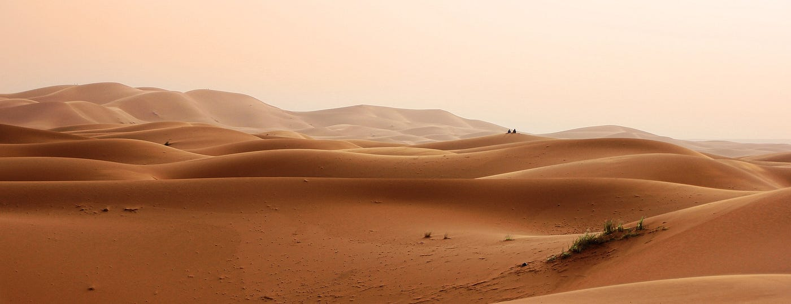
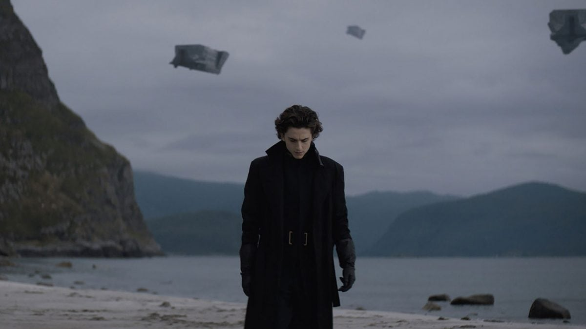
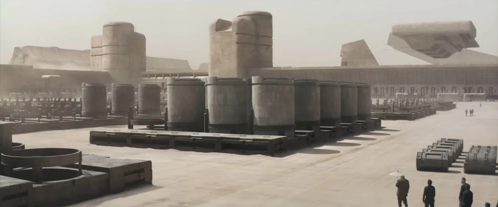
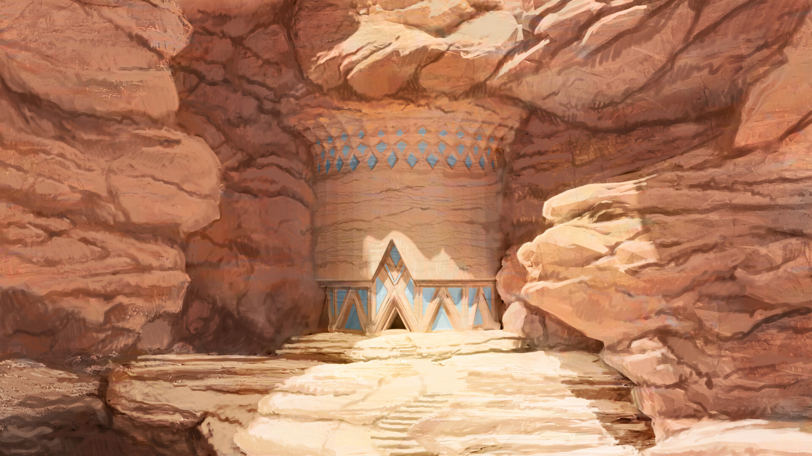

Location 01
Arrakis Open Desert: Wadi Rum, Jordan
The vast, reddish-orange landscapes of Wadi Rum served as the primary location for the deep deserts of Arrakis. This iconic valley, also known as the Valley of the Moon, provided the majestic rock formations and sweeping sands where Paul and Jessica find the Fremen.
Find on Map
Location 02
The Great Dune Sea: Liwa Oasis, Abu Dhabi
For the seemingly endless rolling sand dunes required for the 'Empty Quarter' of Arrakis, production moved to the Liwa Oasis in Abu Dhabi. These massive, untouched dunes provided the terrifying scale needed for the worm-ridden desert landscape.
Find on Map
Location 03
Caladan Ancestral Home: Stadlandet, Norway
To contrast the dry heat of Arrakis, the Atreides homeworld of Caladan needed to feel lush, wet, and ancient. The dramatic cliffs and sweeping ocean views of the Stadlandet peninsula in Norway provided the backdrop for the Atreides' final days on their native planet.
Find on Map
Location 04
Gurney's Hideout / Spice Silos: Rub' al Khali
Sections of the Rub' al Khali desert (the Empty Quarter) stretching into Abu Dhabi were used for specific sequences in *Dune: Part Two*, including the rocky areas where Gurney Halleck handles spice harvesting operations and smuggler hideouts.
Find on Map
Location 05
Fremen Sietch Exterior: Dolomites, Italy
While most Sietch interiors were sets, the production used modified shots of the dramatic, jagged peaks of the Dolomites in Italy (specifically around Tre Cime di Lavaredo) to represent the harsh, rocky mountain entrances to the Fremen underground cities.
Find on Map